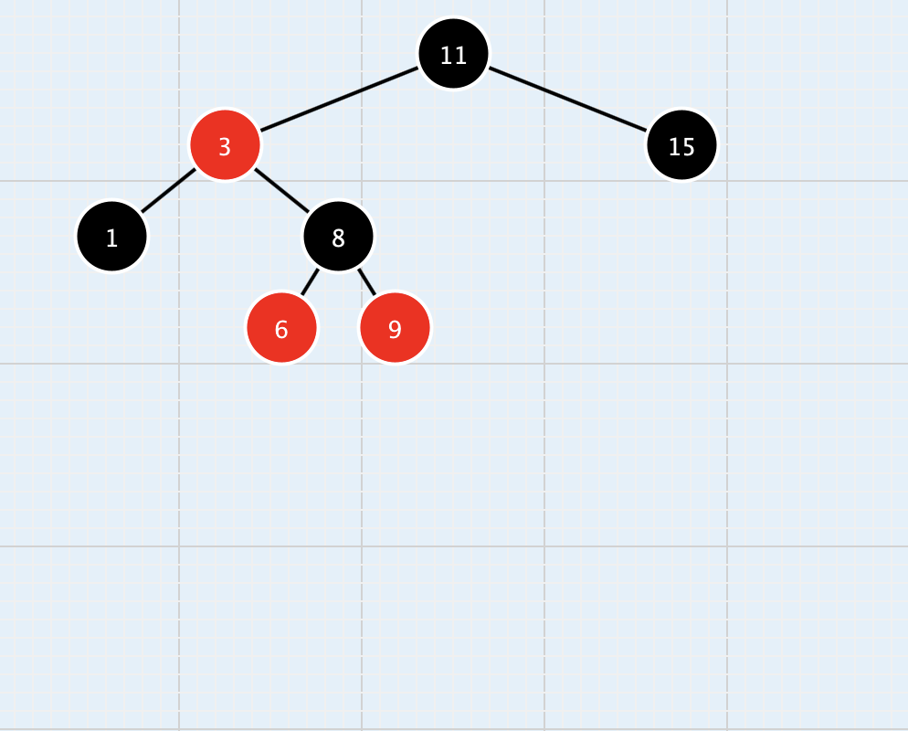

Projects
Jukeboxd
- Used Docker and SpringBoot to create a website, which hosts a variety of songs and albums that can be rated and reviewed
- Used Bcrypt to securely hash passwords, and populated the database with a csv through Spring JDBC
- Developed the top bar and created pages through the use of HTML and CSS
- Implemented multiple SQL queries to parse through the database and create search and save features
Tree Builder

- Created a Java program which implemented nodes to create an AVL and Red and Black tree
- Implemented a system in which nodes could be added and deleted from a tree while it auto adjusted based on the chosen tree type
- Created functions for both tree types which allowed for quick finding of the max value, min value, root, and if a certain node exists in the tree
Move Dawg
- Implemented a program for an animated object which changes direction via buttons through the use of both an array based and a linked list based format.
- Created a system which stored the animated objects position via both a stack based and queue based system and applied the system for both the linked list and array list based format.
- Implemented a button which allowed for the animated object to undo to a previously saved position and redo back to the original position.
- Implemented a trail which followed the path laid out by the animated object and grew smaller and darker in color as it got farther away from the object.